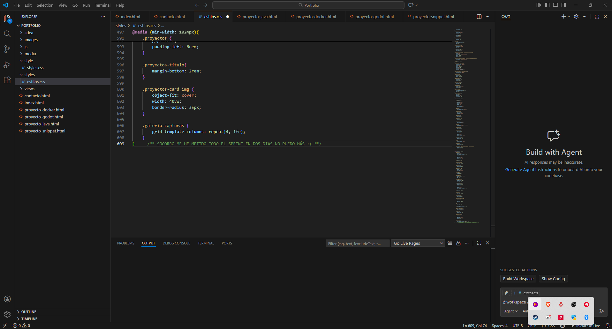

Desarrollo de una aplicación de gestión bancaria mediante consola (CLI) utilizando Java. El sistema permite la creación de usuarios, gestión de cuentas y transferencias en tiempo real, aplicando principios de Programación Orientada a Objetos y manejo de excepciones robusto.
/BANKCLI SYSTEM/



Este proyecto fue clave para asentar conceptos de lógica de negocio y persistencia de datos. Se optimizó el flujo de transacciones para evitar condiciones de carrera y se implementó una interfaz de usuario limpia y funcional dentro de la limitación de la terminal.